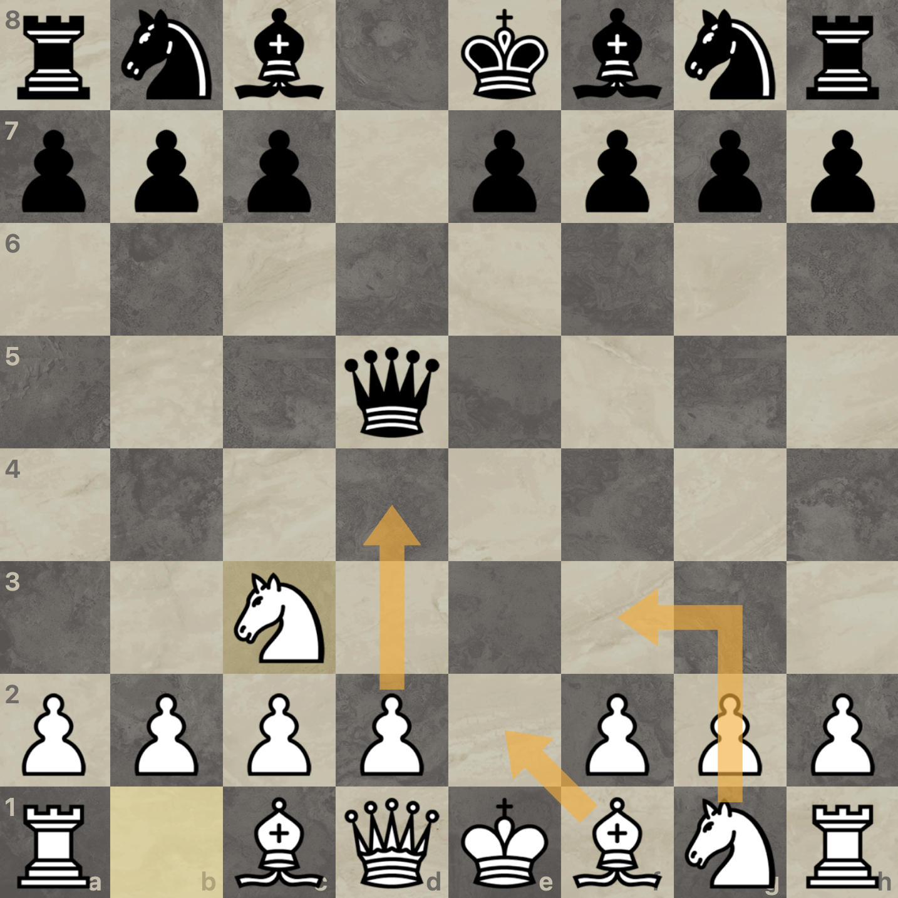
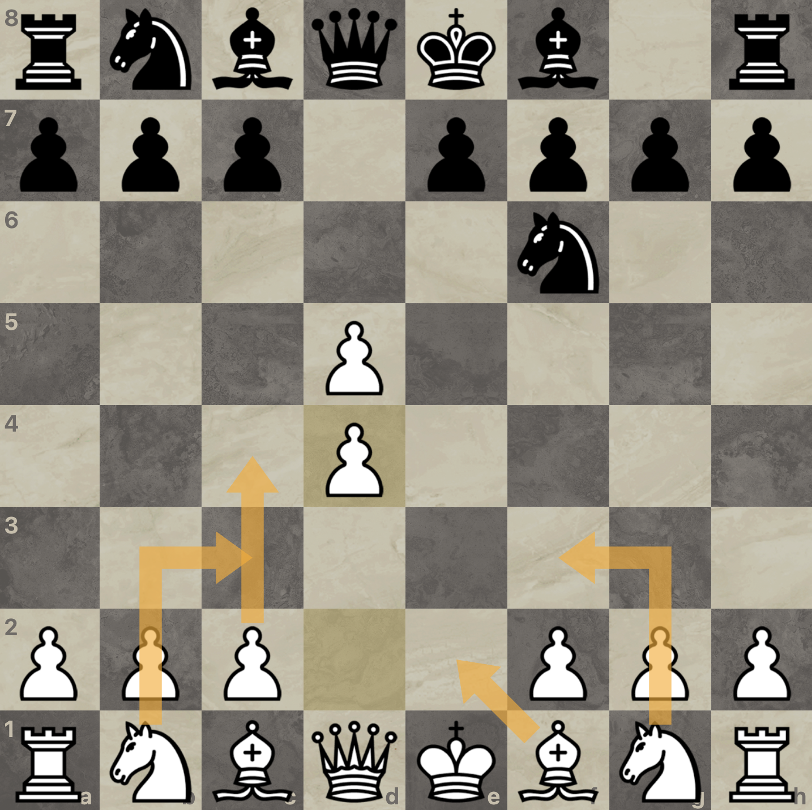

I have always played 1. e4, and recommend it at all levels.
It creates easy to play, tactical positions, and I am presenting some sidelines which will catch your opponents off guard.
If the opponent immediately recaptures with their queen, attack it with Nc3
If 2.Nf6: 3.d4, with c4 next move
